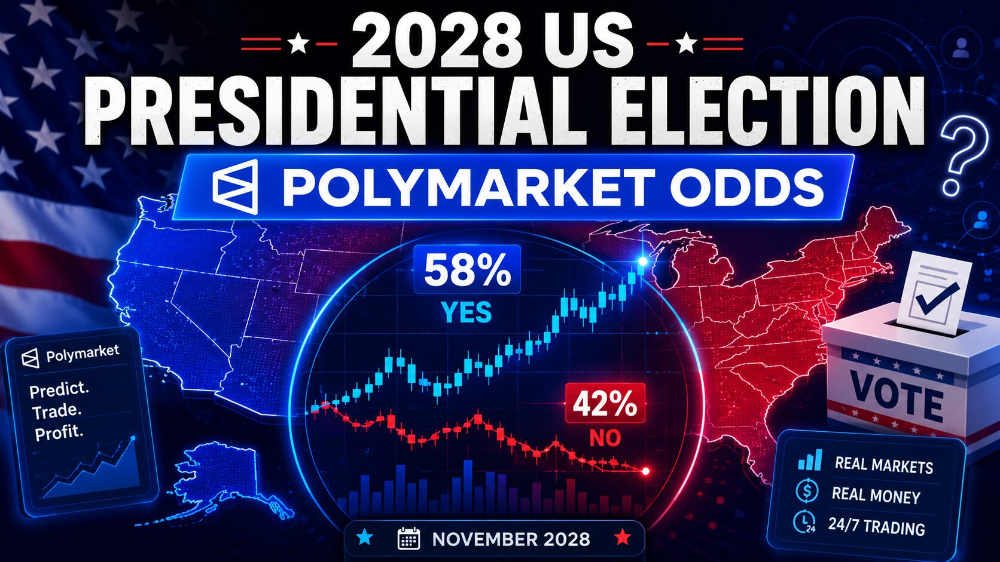

2028 Presidential Election on Polymarket: How to Read the Odds

The short answer
As of today, Polymarket's "Presidential Election Winner 2028" market has Vice President JD Vance narrowly on top at 18.6%, with California Governor Gavin Newsom close behind at 16.7%, Secretary of State Marco Rubio at 14.4%, and a long tail of over 30 other names — from Alexandria Ocasio-Cortez down to Elon Musk and LeBron James — splitting the rest. Nearly $582 million has traded on the headline market alone. But that three-way photo finish at the top is really a summary of two separate, much more decisive races happening underneath it: a Republican primary where Vance has actually pulled well ahead, and a wide-open Democratic primary where no one has a clear lock. Understanding those two markets separately is the difference between reading the odds and actually understanding the race.
Why the headline number is misleading
Look at the Republican Presidential Nominee 2028 market on its own and the picture sharpens considerably: Vance sits at 30%, well clear of Rubio's 26.5%, with Tucker Carlson a distant third at 6.7%. Vance has spent the past year building the kind of frontrunner résumé a sitting VP is supposed to build — leading the U.S. delegation to the Milan-Cortina Winter Olympics, winning the CPAC straw poll with 53% of the vote, picking up early endorsements from Turning Point USA and Glenn Youngkin, and generating a steady stream of family-values news cycles around Usha Vance's pregnancy. Rubio's rise has been almost entirely foreign-policy driven — his profile grew alongside high-visibility roles in the Venezuela operation, Israel-Lebanon mediation, and joint Olympic appearances with Vance, and in June 2026 Trump himself publicly floated a "Vance-Rubio 2028" ticket as unbeatable, which is precisely the kind of signal prediction markets move on.
Flip over to the Democratic Presidential Nominee 2028 market and the contrast is stark: Newsom leads at 25.1%, but nobody else clears 10%. AOC sits at 9.6%, Kamala Harris at 7.8%, and Jon Ossoff at 6.2%, with more than a dozen other Democrats — Pete Buttigieg, Andy Beshear, Josh Shapiro, JB Pritzker — each holding low single digits. That's the real story the "18.6% vs 16.7%" headline number obscures: Republicans are converging on a two-person race, while Democrats are still nowhere close to picking a frontrunner two years out from the election.
Where the rest of the field fits in
Below the top tier, the two markets tell different stories about how fragmented each party actually is. On the Republican side, Donald Trump Jr. briefly registered as a factor in early primary speculation before his May 2026 wedding pulled him out of the political conversation and his price collapsed toward 3%; Ron DeSantis, once seen as a possible 2024 rival to Trump, has faded to low single digits after passing on a run. A noticeably long list of Trump-world names — Elon Musk, Kim Kardashian, Tom Brady, Sarah Huckabee Sanders, Josh Hawley — sit around 1% each, more a measure of speculative name recognition than genuine momentum. On the Democratic side, the fragmentation looks less like a party rallying around unlikely spoilers and more like a field that genuinely hasn't settled: Harris has wavered between "not running" and "not ruling it out" multiple times over the past year, each reversal moving her price a few points, while Buttigieg, Beshear, and Shapiro have all seen brief bumps tied to individual news cycles without ever threatening Newsom's lead.
The three ways to trade this race
Polymarket doesn't just list a single "who wins" contract for 2028 — it runs three connected markets, each answering a narrower question:
Presidential Election Winner 2028 — the overall "who becomes president" market, spanning both parties and any independent or celebrity long shot. Vance 18.6%, Newsom 16.7%, Rubio 14.4%.
Republican Presidential Nominee 2028 — a "will this person win and accept the GOP nomination" contract for each Republican name. This is where Vance's lead over Rubio actually looks decisive: 30% to 26.5%, not the roughly two-point gap the headline market implies.
Democratic Presidential Nominee 2028 — the equivalent contract for Democratic hopefuls. With $1.18 billion traded, it's actually the single most heavily traded market of the three, reflecting how unsettled and actively debated the Democratic side remains.
The relationship between the three is mechanical: multiply the odds that a candidate wins their party's nomination by the odds that party wins the general election, and you get roughly what the headline "who wins the presidency" market should show for that candidate — which is a useful sanity check if you ever see the numbers drift out of line with each other.
Why the same race needs three different markets
This split matters because a general-election market and a nomination market are answering different questions with different sources of uncertainty. The nomination markets isolate intra-party dynamics — polling among primary voters, straw polls, endorsements, midterm fallout — from the separate question of which party wins in November 2028. Someone convinced Rubio has real momentum inside the GOP but who has no strong view on whether a Republican beats a Democrat next cycle can trade the nominee market specifically, without being forced to also take a position on the general election. It's the same logic that shows up in other multi-part election markets: breaking a single race into its component questions lets traders price the part they actually have a view on.
What to watch before November 2028
The single biggest swing factor for both parties over the next stretch is the 2026 midterms, which will test how much of Trump's coalition Vance can carry as heir apparent and give Democrats their first real read on which of the crowded field's names have actual electoral pull rather than just name recognition. Beyond that, watch early-state activity — Newsom has already made multiple swings through New Hampshire and South Carolina on his book tour, a fairly standard tell for a candidate positioning for a run — along with the official primary calendar the RNC and DNC finalize, and any further movement on a possible Vance-Rubio ticket, which would effectively end the Republican nomination market as a two-horse race. All three Polymarket markets resolve based on the official nomination and general-election results, so expect the odds above to keep shifting hard on every midterm result, primary filing, and debate between now and November 7, 2028.
Disclaimer: This post is for informational purposes only and is not financial or investment advice. Odds shown reflect prices at the time of writing and change continuously as new information emerges — always check live prices at polymarket.com before trading.